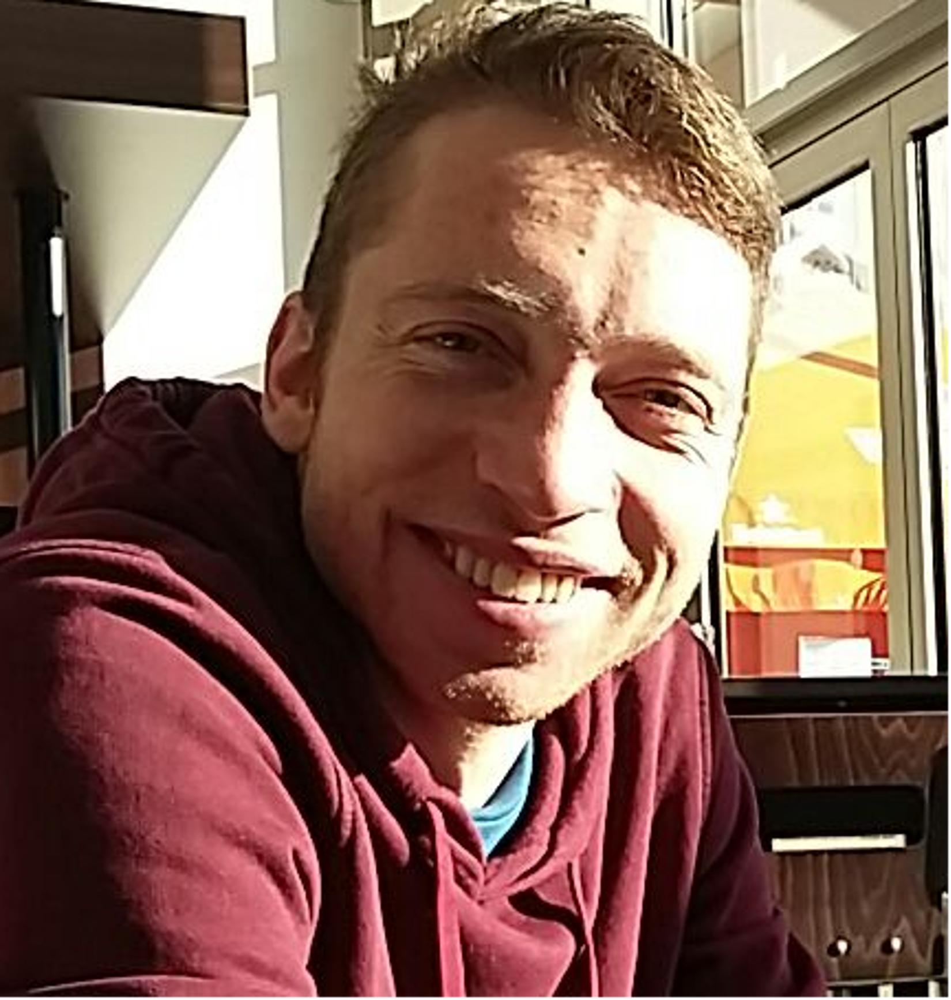

Research interests
computational and systems neuroscience My main research interests lie in the direction of achieving an understanding of neuronal systems and processes at different levels of description (conceptual and qualitative) through the development and application of computational models. I want to investigate how the interaction between the dynamics of single neurons give rise to neuronal assemblies and what the roles of these neuronal assemblies are in perception, memory, cognition and information processing in the brain. I am particularly interested in the occurence and functions of oscillatory activity in -and between- networks of neurons, and the formation and role of synchronous and a-synchronous (chimera-like) states in the brain. Ultimately, I want to know how these processes can account for perception; organisation and development of brain structures and; the generation of behavior. Finally, I wish to discover how (or whether) these principles and processes of the brain can give rise to consciousness.
Experience
I have a history in (digital) signal processing and system design/analysis, combined with solid programming education and experience. My main languages include: C++, Python and Matlab/GNU Octave. Currently, I am following a research master in Behavior and Cognition at the University of Barcelona, where I work on computational modeling and analysis of spiking neural networks.
Projects see project page for more info